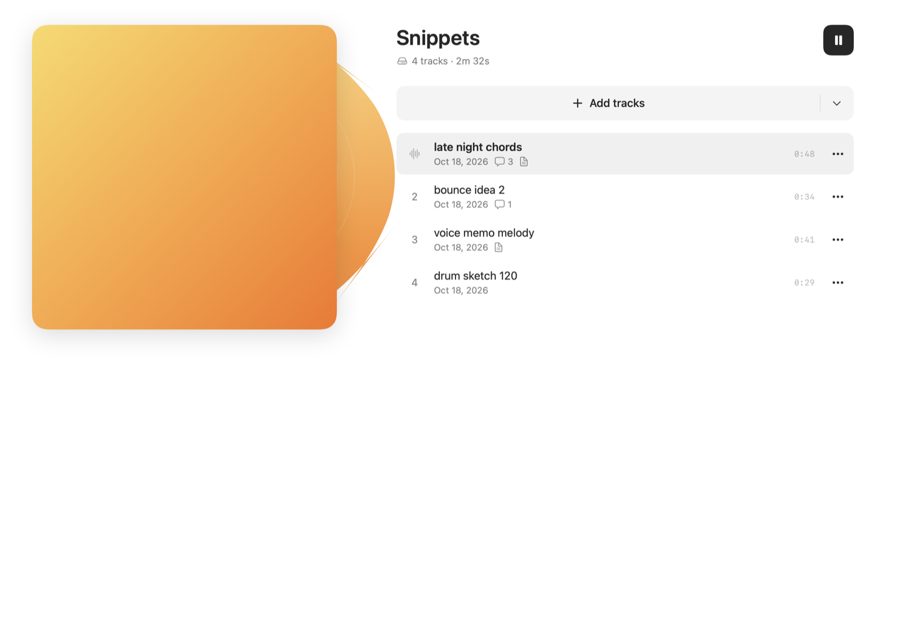
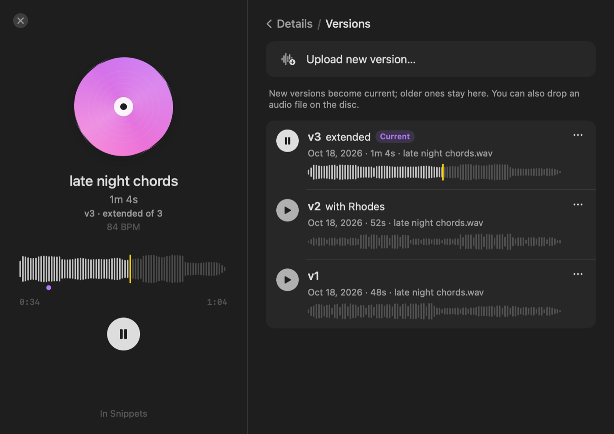
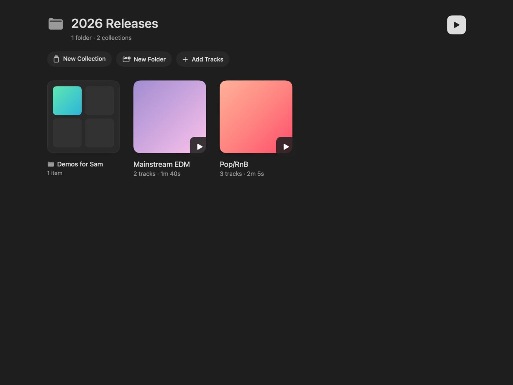
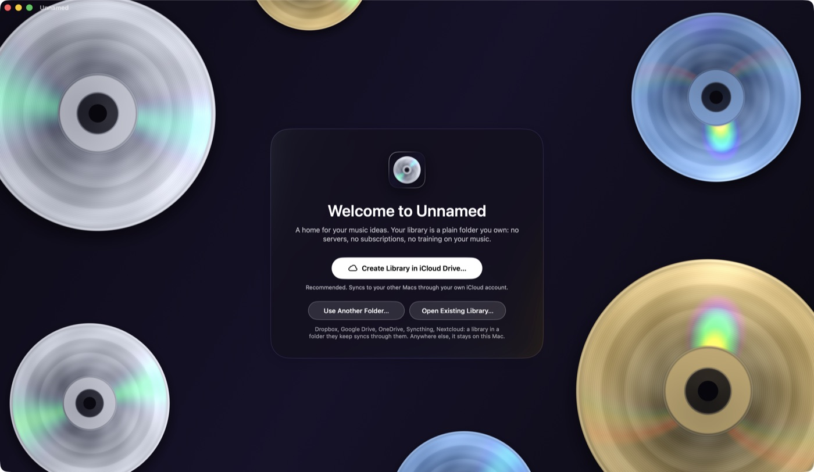

Unnamed: the free, open-source music WIP tracker for Mac
A free alternative to [untitled] and other subscription apps for works in progress. Also: admittedly, completely, 100000% slopcode. Just absolute garbage code. But it's free so enjoy it i guess.
Every demo, voice memo, bounce and beat in one place. Keep every version, leave timestamped comments, find songs by key and BPM, and sync through your own iCloud Drive. No subscription, no servers, no lock-in.
Free forever · macOS 15 or later · Apple silicon and Intel · Install help

Why Unnamed
A home for unfinished music
Songwriters, producers and bands make a lot of unfinished music: voice memos of a melody, bounces from the DAW, a rough mix to send the band, the “final” master that's actually version 7. Unnamed is a music work-in-progress (WIP) tracker that keeps all of it organized, playable and commented, on your Mac.
Free and open source
MIT licensed. No account, no subscription, no ads, no tracking.
Your files, your folder
Your library is a plain folder of audio files and small text files. Open it in Finder, back it up, take it with you. Nothing depends on this project surviving.
Syncs through what you already have
Keep the library in iCloud Drive (recommended) and it follows you to your other Macs. Dropbox, Google Drive, OneDrive, Syncthing and Nextcloud work too.
Nothing trains on your music
There's no server to upload to. Your music only goes where your sync service takes it.
Features
Everything your works in progress need
Keep every bounce, comment on the exact second, find any song by key or tempo, and lay an album out like a storyboard. In a native Mac app that stays light on your battery.
Version history for every song
Upload a new bounce and the old one is kept. Play any version, name it (“rough mix”, “with vocals”, “master v3”), make an older one current again, or export it.
Comments stay attached to the version they were made on, so feedback on v2 doesn't get mixed up with v3.

A waveform player with timestamped comments
A floating player with a scrubbable waveform, queue, shuffle and repeat. Media keys and Control Center work.
Start typing while a song plays and your comment pins to that moment. Comments show as markers on the waveform; click one to jump there. Per-song notes hold lyrics, chords and to-dos.
late night chordsv3 · extended
0:34 / 1:04
intro's too long?
bring the drums in HERE
this chord!!
Type to comment at 0:34…
Automatic key and BPM detection
Drop in a song and Unnamed listens for its tempo and key in the background, so you can search for “128” or “F♯ minor”. Anything you type yourself always wins.
The detector is built in, runs on your Mac, and is measured against real recordings. How accurate is it?
Tempo 128BPM
KeyF♯minor
Found in the background as the song was added. Typed values win.
Collections, folders and an archive
Organize demos into collections: albums, EPs, mixtapes, beat packs, sets of sketches. A song can live in several collections at once.
File collections into folders as deep as you like. Archive anything to hide it without deleting it, and restore it to exactly where it was.

Moodboards for concept albums
Flip a collection into an infinite moodboard: lay songs out as glass threads, add pictures, videos, text and drawings.
Press Play Journey and the view travels along the threads as the music plays: a storyboard for your album.
Play Journey
Yes, really
DJ scratching
Grab the spinning CD, or drag along the waveform, and the music follows your hand, backwards and all. Let go and it spins back up in time.
bounce idea 2
Made for macOS
SwiftUI and Liquid Glass on macOS 26, with album colours flowing into the window. Spinning CDs drawn by a Metal shader.
Import WAV, MP3, AIFF, M4A/AAC, FLAC, CAF and anything else macOS plays. Drag songs straight into Finder or your DAW. A Low Power Mode keeps it light on battery.

The full feature list
Import anythingWAV, MP3, AIFF, M4A/AAC, FLAC, CAF, or anything else macOS can play. Use Add Tracks, drag in files or whole folders, drop them on the Dock icon, or use Open With.
CollectionsAlbums, EPs, mixtapes, sets of sketches. A track can be in several. Reorder by dragging, and move or duplicate tracks between collections.
FoldersFor organizing collections, nested as deep as you like. Drag things into folders in the sidebar or on a folder's page.
Version historyKeep every version of a track. Play any of them, name them, make one current again, or export it.
ArtworkUpload an image, drop one on the cover, or pick a photo from Unsplash (the photographer is credited). Tracks without art take on their collection's look.
Waveform playerScrubbable waveform, shuffle, repeat (all or one), volume and an up-next queue. Media keys and Control Center work too.
Timestamped commentsPinned to a moment and a version, shown as markers on the waveform. Click one to jump there.
NotesPer track, for lyrics, chords and to-dos.
Key and BPM detectionWorked out when a song or new version is added. ½× and 2× fix half or double time, and File › Find Missing Keys and Tempos fills in older tracks.
MoodboardsAn infinite dot-grid canvas per collection. Songs become glass threads; add pictures and videos (compressed to HEIC and HEVC), text and drawings.
ScratchingGrab the disc in the player, or the record behind a collection's cover, or drag along the waveform.
ArchiveTracks, collections and folders go out of sight without being deleted, and come back to exactly where they were.
SearchAcross titles, file names, notes, comments, key and BPM.
SyncThrough iCloud Drive, or any folder Dropbox, Google Drive, OneDrive, Box, Syncthing or Nextcloud keeps. Songs still in the cloud download when played.
ExportA track, any version, or a whole collection as numbered files. Or drag a track straight into Finder or your DAW.
Liquid GlassOn macOS 26 (Settings › Appearance): a glass player and buttons, artwork colours in the window, and a “+” that melts out of the player.
A Metal welcome screenSlowly spinning CDs drawn per pixel with a small diffraction model, whose rainbow sheen follows your mouse.
Light on the CPUAnimations run in Core Animation, so playing music costs a few percent of one core. Low Power Mode tones things down further.
Unnamed vs. [untitled]
A free, open-source alternative to [untitled]
Apps like [untitled] do this beautifully, but your music lives on their servers, and more storage and the pro tools need a monthly membership. Unnamed is the opposite deal: free, open source, and your music stays in a folder you own.
Unnamed compared with [untitled]
Feature
Unnamed
[untitled]
Price
Free, forever
Free tier; membership $7.99/month or $49.99/year
Where your music lives
A folder you own: iCloud Drive, Dropbox, any synced folder
Their cloud (with an offline mode)
Source code
Open (MIT)
Closed
Comments
✓Yes: Timestamped, per version
✓Yes: On projects and tracks
Apps
Mac
iPhone, desktop and web
Share links
Not yet
✓Yes: With access controls
Stem splitting, pitch and speed
✗No
✓Yes: With a membership
What Unnamed adds
Named version history for every song, automatic key and BPM detection, notes, moodboards with Play Journey, DJ scratching, and a library of plain files you can open without the app, synced by whatever service you already use.
Honest take
[untitled] is a great product with a team behind it, apps for iPhone, desktop and the web, and share links for sending music to collaborators. If those matter most to you, use it. Unnamed is for people who'd rather own their files, not pay monthly, and don't mind an app that's young and a little weird.
[untitled] details are from its App Store listing as of October 2026. Prices and features change; check their site for the current details.
Full disclosure
Yes, it's 1000% vibecoded
No human wrote the code. Every line of Swift, the Metal shaders, the tests and most of this page were written by an AI (Claude Code), directed by a musician who knew what the app should feel like, tried every build, and sent it back until it did.
1000% vibecoded
It's tested by machines, not a QA team.More than 100 automated tests cover the library format, sync, playback, scratching and key and BPM detection, but expect rough edges.
Your data is safe by design.Your library is plain files in a folder you choose, so no bug can lock you out. Back it up like any folder.
Contributions are welcome, vibecoded or not.Open an issue or a pull request.
Get it
Download and install
Unnamed is free and isn't notarized by Apple (that needs a paid developer account), so macOS asks you to allow it once.
Requires macOS 15 Sequoia or later, on Apple silicon or Intel. Liquid Glass needs macOS 26. When you install a new version, the app may ask you to point it at your library folder again the first time.
FAQ
Questions, answered
Is Unnamed really free?
Yes. It's open source under the MIT license, with no account, subscription, ads or tracking.
Is it a good [untitled] alternative?
For organizing, versioning, commenting on and listening to works in progress on a Mac, yes. It doesn't have an iPhone app or share links yet.
Where is my music stored?
In a folder you choose. Audio stays as the files you imported; collections, comments and notes are small JSON and Markdown files next to them (the format). You can read it all without the app.
Can I sync with Dropbox, Google Drive or OneDrive instead of iCloud?
Yes. Put the library in any folder those services (or Syncthing, Nextcloud, a network drive) keep in sync. iCloud Drive is recommended because it needs nothing else installed.
Can I share songs with my band?
Share the library folder with them through iCloud Drive (or your sync service), and comments show up for everyone. Share links are on the roadmap.
Does it upload my music anywhere, or use it to train AI?
No. There's no Unnamed server. Your music only goes where your sync service takes it. The one network feature, picking cover art from Unsplash, only sends your search words.
How accurate is the key and BPM detection?
Measured on 254 full-band mixes of Apple Loops whose tempo and key are known: tempo is exactly right 78% of the time (another 10% are half or double time), and key 54% (another 19% are a fifth away or the relative major/minor). That's about what classic open-source detectors manage. One click fixes a wrong guess, and typed values always win.
Is there an iPhone app?
Not yet. Unnamed is a Mac app for now. An iPhone app that opens the same library folder is on the roadmap.
Why does macOS warn me when I first open it?
Apple only skips that warning for apps notarized with a paid developer account. Unnamed is free and open source, so you can read every line, or build it yourself.
For developers
Build it yourself
You need macOS 15 or later and Xcode 26 (Liquid Glass uses the macOS 26 SDK). Out of the box the app is signed to run locally, with no Apple account needed.
git clone https://github.com/michdooley/Unnamed.git
cd Unnamed
open Unnamed.xcodeproj
Press Run, then choose Create Library in iCloud Drive…. Signing with your own team, Unsplash, release builds and the test suite are covered in the README. The library format is documented in LIBRARY_FORMAT.md.
Next
Roadmap
An iPhone app that opens the same library folder
Recording straight into the app
Sharing a collection by link
Built-in sync to WebDAV (Nextcloud, NAS) and S3-compatible storage, no desktop sync app needed
demo 14 (no name yet)
Give your unfinished songs a home
Free, open source and yours to keep. Slopcode and all.
intro's too long?
bring the drums in HERE
this chord!!